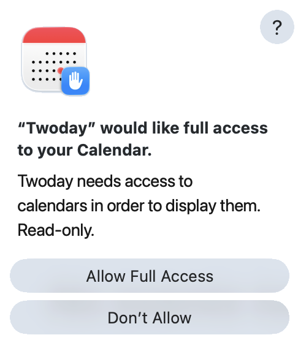
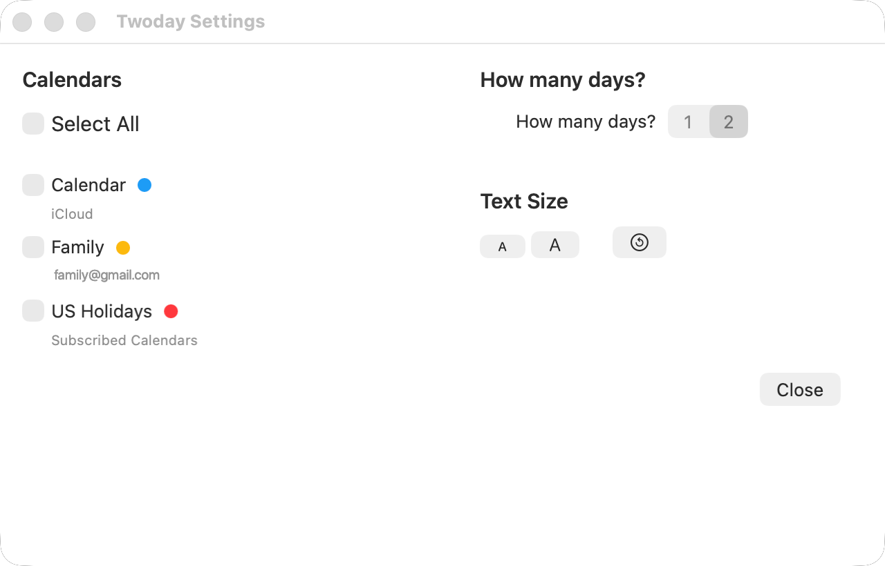

Twoday
FAQ
How do I connect my calendar?
The first time you launch Twoday, it will ask for permission to
access your calendar. Click on Allow Full Access.

Twoday is read-only, so it will never write anything back to your calendar. There is no risk of accidentally moving, editing, or deleting an event. (This is actually a feature!) After granting access, then use Settings to select your calendars.Can I choose which calendars to sync?
Yes. In the Twoday → Settings menu, you can
select which calendars to show. It is placed in Settings so it is
less likely to be changed by accident.

Is any information stored within this app?
No. You continue to use Apple Calendar to create and edit events.
Twoday simply presents today and tomorrow in a cleaner,
easier-to-read view.
Can I sync with other calendars other than Apple?
Yes, indirectly. Twoday does not connect to Google Calendar or
Outlook on its own, but Apple Calendar can subscribe to those
calendars. Once they appear in Apple Calendar, Twoday can display
them.